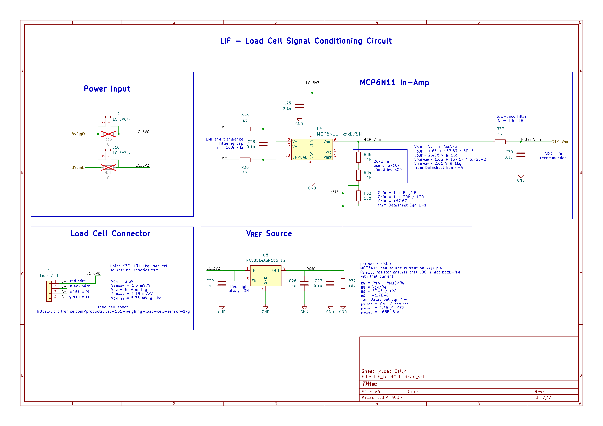
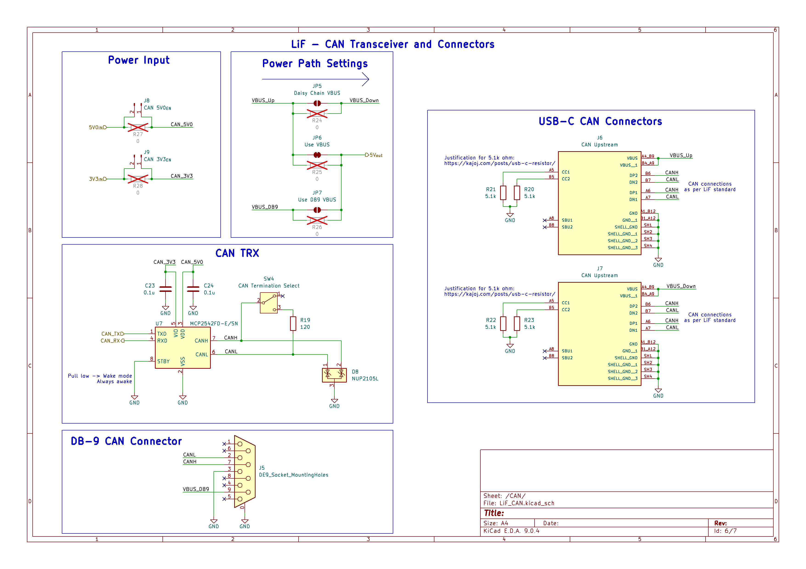
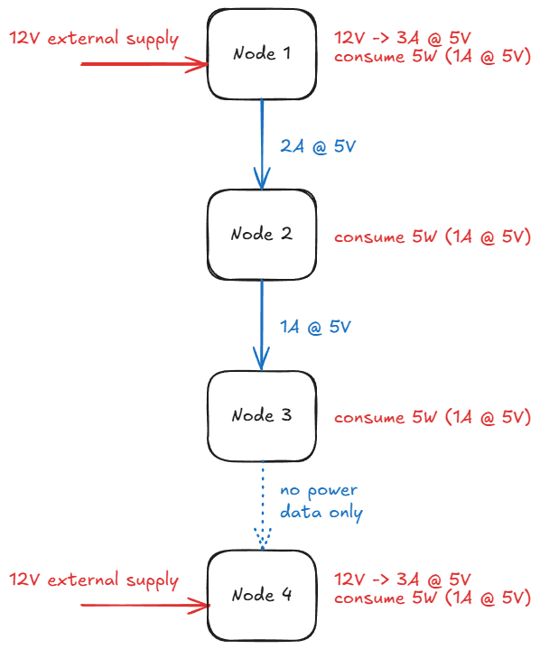
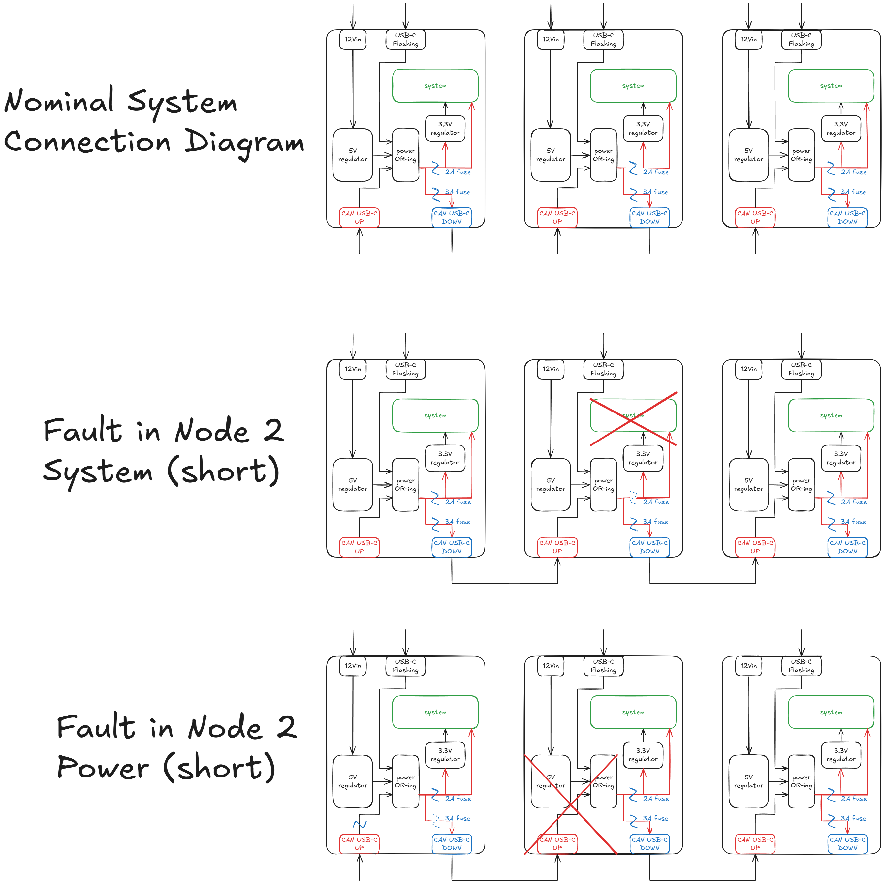
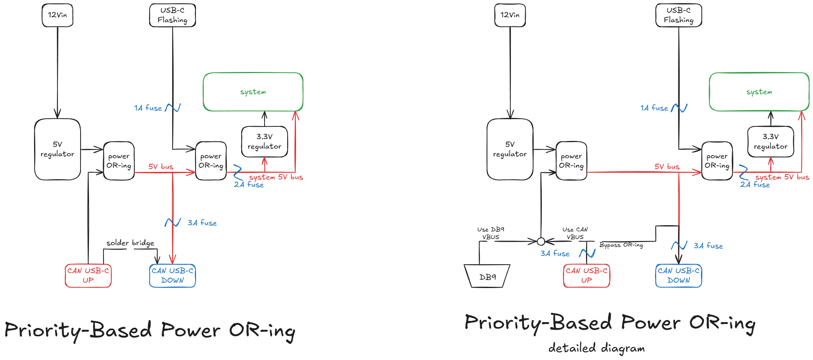

Deep-dive into Rita's Load Cell schematics
I reworked Rita's load cell circuit with the help of ChatGPT. I used it to point me in the right direction on circuit design for load cell signal conditioning since I have never worked with this type of sensor before.

Added reference voltage $V_{REF}$ source: NCV8114ASN165T1G[4] LDO
Added noise filtering capacitor between $V^{+}$ and $V^{-}$ terminals of the in-amp[3]. This cap in combination with 47-ohm
resistors filters EMI and transient noise
Added output filtering using recommended values for ESP32-S3 ADC[5].
Used JST-PH2.0 connector for load cell. This connector family will be used as standard for this PCB.
It was recommended that ideal 47-ohm resistance at input should be implemented using matched resistors, however such components are expensive, and for the purposes of load-presence detection, this is unnecessary.
Load Cell Parameters
The load-cell parameters[1][2] used were:
- Hysteresis: 0.03% F.S
- Model No.: YZC 131
- Material: aluminium
- Dimensions (L × W × H): 75 × 12.6 × 12.6 mm
- Rated output: 1.0 ± 0.1 mV/V
- Non-linear output: ±0.03% F.S
- Output impedance: 1000 ±10% Ω
- Repeatability: 0.03% F.S
- Creep (5 minutes): 0.05% F.S
- Zero balance: ±0.1 mV/V
- Operating temperature: −20 to 65 °C
CAN Transceiver
I swapped Rita's CAN TRX IC to one used in Molybdenum Penguin boards, since her IC can only operate
at either 3.3 V or 5 V. This makes it incompatible with our 3.3 V MCU and 5 V CAN bus.
MCP2542FD-E/SN is used instead.
Vertical USB-C connector was swapped for horizontal connector from MoP boards: USB4105-GF-A

Power regulation w/o USB PD
Now that Power Delivery feature is excluded from the project, I need to rethink power distribution. How to place fuses such that fault with a given node does not result in power outages on downstream nodes?


The initial approach uses a 3-channel power OR-ing block to switch between 1 of 3 voltage inputs:
- Upstream CAN USB port
- Programming USB port
- Auxiliary power supply port
The diagram shows 2 possible failure modes:
- short in system of the node
- fuse to the system is tripped
- short circuit does not result in cascaded failure
- short in power regulation system of the node
- fuse on the upstream node is tripped
- this and downstream node lose power
The second failure mode considered results in cascaded power outage to downstream nodes. This is deemed to be acceptable in a test PCB, since this mode is deemed to always result in power outage downstream. The only way to avoid it is to bypass the power OR-ing circuit entirely. This would require manual configuration of the power path. This is a valid option, and the PCB will be designed with this in mind: it should be possible to bypass the automatic power path configuration through adding/removing jumpers or 0-ohm resistors. A possible way to mitigate this failure mode is to ensure power OR-ing circuit is thoroughly tested and is made very reliable.
Another issue with the current approach is the OR-ing controller itself (LM5050-1), which
does not implement priority or arbitration between multiple available voltage sources. It simply picks
the one with highest voltage. This means that potentially a programming USB port may be powering not
only this PCB, but the downstream PCBs as well. This is dangerous, as the source for that USB is a PC,
and it should not be used to source a lot of current. Therefore, 2 changes need to be made:
- use priority-based power OR-ing controller
- set up power path such that programming USB can only power the node it is connected to, and can never power downstream nodes

Using TPS2117DRLR IC in priority mode:
- set switchover threshold to 4V
- switchover occurs when voltage on RP1 pin drops below VREF=1V
- 30k / 10k voltage divider is used
TPS2117DRLR is an amazing component for this application:
- up to 5.5 V
- max current of 4 A
- priority-based mode
- small package
- cheap unit cost
The only downside is that the only package this IC comes in is nearly lead-less DRL package. This is considered acceptable, since other ICs don't fit the application as well as this IC.